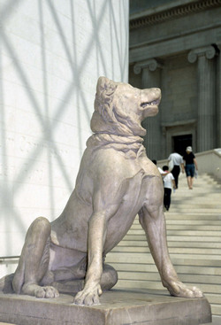

|
|
British Museum Acquires Jennings Dog The British Museum is delighted to announce that it has raised the funds necessary for the purchase of the Jennings Dog. The rare Roman sculpture from the 2nd century AD will now remain in Britain thanks to the generosity of the Heritage Lottery Fund, the National Art Collections Fund (The Art Fund), the British Museum Friends and contributions from the public. The cost has been met by public response to the campaign which has raised some £30,000, The Heritage Lottery Fund which gave £362,000, £100,000 from the National Art Collections Fund, £50,000 from the British Museum Friends, £40,000 from the supporters of the Greek and Roman department and £80,000 from British Museum Trust Funds. Graham
Greene, Chairman of the British Museum Trustees said: Sue Bowers,
Heritage Lottery Fund Regional Manager for London said: Minister of
State for the Arts, Baroness Blackstone said: Sir Nicholas
Goodison, Chairman of the National Art Collections Fund said: It is intended that the Dog will remain on display in the British Museum Great Court until next year and will then move to the Hellenistic Gallery, before finding its final home in the newly restored King's Library gallery. Note for Editors The Dog is one of the very few examples of a Hellenistic animal sculpture that was copied in the Roman period, indicating that it must have been particularly important. It might, for example, have been connected with a civic monument in Epirus in northwestern Greece, for the Molossian Hound was native to that region. Epirus was sacked by the Romans in 168BC and a famous bronze dog with local patriotic significance might well have been carried back to Rome by the conquerors. Henry Constantine Jennings acquired the Dog in 1753-6, while staying in Rome, and commented "A fine dog it was, and a lucky dog was I to purchase it". Jennings liked to call the sculpture the Dog of Alcibiades - Alcibiades, a 4th century Athenian statesman is said to have docked the tail of his dog in order to give the Athenian people something else to talk about than himself. Jennings's motive was probably much the same, for the Dog became so famous in England that the owner was called 'Dog-Jennings'. It was also admired by both Winckelmann and Dr Johnson, while to have a cast of it was considered a sign of true gentlemanly taste. A collector and a gambler, Jennings was a very colourful character. Plagued by debts, however, he was eventually forced to sell the Dog in 1816. It was bought by T. Duncombe MP and taken to Duncombe Park (designed by Vanburgh) in Yorkshire, where it was placed in the Grand Hall until the 1980s. For further information or visuals please contact the Press Office on 020 7323 8525 / 8522
|

|
||
|
|
|||